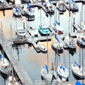
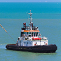

Helping you navigate the marine insurance market
We’ve been a leader in the marine business for over 13 years and our reputation reflects our ongoing commitment to service.
We help educate agents and their clients about marine risks as a key part of the ongoing service we provide.

Recreational Marine Insurance
At Harbor Risk, we have a knowledgeable staff with an average of 10 years of experience in the marine insurance business.
We leverage that knowledge to help you understand your marine-related risks,
so we can help you structure a coverage package that best suits your needs.
Learn More >

Commercial Marine Insurance
Whether you’re looking for recreational marine business insurance
or commercial marine insurance, we can help you put together a comprehensive,
cost-effective program to safeguard assets and protect against potential risks.
Learn More >